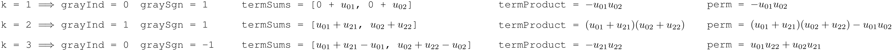

AA
The quotonic.aa module includes functions required to perform a transformation from a single-photon
unitary matrix (\(m\times m\) where \(m\) is the number of optical modes) to a multi-photon unitary
matrix (\(N\times N\) where \(N\) is the dimension of the Fock basis for \(n\) photons and \(m\) modes).
This transformation is required to describe how unitaries encoded in the Clements configuration act
on states resolved in the Fock basis since \(N \neq m : n > 1\).
The code in this module has been inspired by the description of this multi-photon unitary transformation in S. Aaronson & A. Arkhipov, “The Computational Complexity of Linear Optics”, arXiv:1011.3245 [quant-ph] (2010). All code in this module is adapted from Bosonic: A Quantum Optics Library, as originally designed for use in G. R. Steinbrecher et al., “Quantum optical neural networks”, npj Quantum Inf 5, 60 (2019).
factorial(x)
¶
Calculate \(x!\) efficiently.
This function uses Cython type definitions to speed up the computation of
\(x!\). It is also memoized to ensure that it is not evaluated redundantly.
Parameters:
| Name | Type | Description | Default |
|---|---|---|---|
x |
int
|
Value to take the factorial of |
required |
Returns:
| Type | Description |
|---|---|
int
|
Factorial result, \(x!\) |
fockState_to_inds(numPhotons, state)
¶
Convert a Fock basis state to a list of indices for \(\mathbf{U}_T\), \(\mathbf{U}_{S,T}\).
In the transformation described by Aaronson & Arkhipov, matrices \(\mathbf{U}_T\)
and \(\mathbf{U}_{S,T}\) must be constructed (see multiPhotonUnitary documentation
for more details). For example, if the basis state is \(\left|21\right\rangle\),
then index 0 would be inserted twice, followed by a single insertion of index
1. Cython type definitions are used to improve performance.
Parameters:
| Name | Type | Description | Default |
|---|---|---|---|
numPhotons |
int
|
Number of photons, \(n\) |
required |
state |
np.ndarray
|
Fock basis state |
required |
Returns:
| Type | Description |
|---|---|
np.ndarray
|
A 1D array of length \(n\) storing indices corresponding to the input Fock basis state |
multiPhotonUnitary(numPhotons, U)
¶
Perform the multi-photon unitary transformation on a single-photon unitary \(\mathbf{U}\).
This function constructs the corresponding multi-photon unitary, \(\boldsymbol{\Phi}(\mathbf{U})\), from input unitary \(\mathbf{U}\). It first retrieves a full list of the corresponding Fock basis, leveraging the fact that the dimension of the square single-photon unitary must be the number of optical modes, \(m\). Then, for each iteration, an element of the multi-photon unitary, \(\boldsymbol{\Phi}(\mathbf{U})\) is computed using the transformation of Aaronson & Arkhipov. Each element can be denoted as \(\left\langle S \right|\boldsymbol{\Phi}(\mathbf{U})\left| T \right\rangle\) where \(\left|S\right\rangle = \left|s_1,s_2,\dots,s_m\right\rangle\), \(\left|T\right\rangle = \left|t_1,t_2,\dots,t_m\right\rangle\) represent arbitrary Fock basis states and \(m\) denotes the number of optical modes. For a given element, an \(m\times n\) matrix, \(\mathbf{U}_T\), is constructed by taking \(t_j\) copies of column \(j\) in the input single-photon unitary \(\mathbf{U}\) for all \(j \in \{1,\dots,m\}\). Next, an \(n\times n\) matrix, \(\mathbf{U}_{S,T}\), is constructed by taking \(s_j\) copies of row \(j\) in the previously generated matrix, \(\mathbf{U}_T\), for all \(j \in \{1,\dots,m\}\). The matrix element of multi-photon unitary, \(\boldsymbol{\Phi}(\mathbf{U})\) is then given by,
As an example, consider a case where there are 2 photons (\(n = 2\)) and 3 modes (\(m = 3\)). The input Clements encoded single-photon unitary is given by,
To compute the matrix element \(\left\langle 101\right|\boldsymbol{\Phi}(\mathbf{U})\left|011\right\rangle\), first build \(\mathbf{U}_T\) by taking 0 copies of the first column of \(\mathbf{U}\), 1 copy of the second, and 1 copy of the third,
Next, build \(\mathbf{U}_{S,T}\) by taking 1 copy of the first row of \(\mathbf{U}_T\), 0 copies of the second, and 1 copy of the third,
The permanent of \(\mathbf{U}_{S,T}\) must be calculated to compute the corresponding matrix element of \(\boldsymbol{\Phi}(\mathbf{U})\). Currently, Ryser's algorithm, in combination with the use of Gray code order, is the best known general exact method and is evaluated at \(O(2^{n-1}n)\). Ryser's algorithm adheres to Ryser's formula, expressed mathematically as,
where set \(P = \left\{0,1,\dots,n-1\right\}\) and the matrix elements are numbered from \(0\) to \(n - 1\) along
its rows and columns respectively. Gray code is used to build subsets \(X\) of \(P\) in an efficient manner that
allows matrix permanents to be computed at \(O(2^{n-1}n)\). It is conducted using bitwise operations that instruct
the algorithm to include only the appropriate matrix elements in each sum. The first subset that would be
constructed is the null set, \(X = \emptyset\), thus, it is avoided in the loop that computes the permanent.
In this example, \(n = 2\). It follows that prepGrayCode returns grayInds = [0, 0, 1, 0],
graySgns = [1, 1, 1, -1]. Note that each grayInd instructs the elements of \(\mathbf{U}_{S,T}\) required to
achieve the next subset \(X\) of \(P\). Each graySgn instructs whether to add or subtract. The required sums
corresponding to subset \(X\) are stored in the elements of termSums. The termProduct is initialized from the
result of \((-1)^{\left|X\right|}\). With all of this information in mind, the loop that computes the permanent
of \(\mathbf{U}_{S,T}\) would proceed as shown below for this example.

Finally, the matrix element is calculated as,
Note that the transformation from single-photon to multi-photon unitary relies on \(N^2\) permanent calculations
of \(n\times n\) matrices \(\mathbf{U}_{S,T}\) where \(N = {n+m-1 \choose n}\) is the dimension of the Fock basis.
This number of calculations, alongside the fact that Ryser's algorithm with Gray code is \(O(2^{n-1}n)\), makes
this function the most time consuming of all quantum photonic simulations. The calculations of the elements of
\(\boldsymbol{\Phi}(\mathbf{U})\) are conducted in parallel using Cython for this reason. Specifically, the
code turns off the Global Interpreter Lock (with nogil) to enable shared memory, multi-threaded code as
compiled with OpenMP. Cython type definitions and memory allocation are also exploited to improve performance.
Cython decorators are also selected to speed up the computation.
Parameters:
| Name | Type | Description | Default |
|---|---|---|---|
numPhotons |
int
|
Number of photons, \(n\) |
required |
U |
np.ndarray
|
Single-photon unitary, \(\mathbf{U}\) (\(m\times m\)), to transform |
required |
Returns:
| Type | Description |
|---|---|
np.ndarray
|
Multi-photon unitrary, \(\boldsymbol{\Phi(\mathbf{U})}\) (\(N\times N\)) |
prepGrayCode(numPhotons)
¶
Prepare required Gray indices and Gray signum results to compute \(\text{Per}\left(\mathbf{U}_{S,T}\right)\).
For a given number of photons, \(n\), this function prepares the
required Gray indices and Gray signum results to compute
\(\text{Per}\left(\mathbf{U}_{S,T}\right)\) using Ryser's
algorithm with Gray code at \(O(2^{n-1}n)\). Bitwise operations
are used to determine which elements of \(\mathbf{U}_{S,T}\)
should be added or subtracted at each iteration of Ryser's
algorithm. This information is stored in respective 1D arrays
for quick access in multiPhotonUnitary. The computation of
the elements of each of these arrays is conducted in parallel
with Cython. Cython type definitions are used to improve
performance. This function is also memoized to ensure it is
not redundantly evaluated for a constant number of photons, \(n\).
Parameters:
| Name | Type | Description | Default |
|---|---|---|---|
numPhotons |
int
|
Number of photons, \(n\) |
required |
Returns:
| Type | Description |
|---|---|
Tuple[np.ndarray]
|
Tuple of two 1D arrays, the Gray indices and signum results, respectively |
prepNorms_and_USTinds(numPhotons, numModes, fockDim)
¶
Compute and arrange normalization constants and indices required for the multi-photon unitary transformation.
From the number of photons, \(n\), the number of optical modes, \(m\) and the dimension of the Fock basis, \(N\), this function computes and arranges the normalization constants and indices required to generate the multi-photon unitary transformation as described by Aaronson & Arkhipov.
Each normalization constant involves the product of factorials for each
mode of the two basis states that define an element of the multi-photon
unitary \(\boldsymbol{\Phi}(\mathbf{U})\). The mathematical form of the
normalization constants is given in the documentation of
multiPhotonUnitary. This function computes the required product of
factorials for each basis state, square roots this product, then combines
all results in a 2D array that stores the normalization constant for
each element of \(\boldsymbol{\Phi}(\mathbf{U})\) in the corresponding
position.
This function also returns a 2D array of indices required to construct
matrices \(\mathbf{U}_T\), \(\mathbf{U}_{S,T}\) as explained in the
documentation of multiPhotonUnitary. Each row of this 2D array
corresponds to a specific Fock basis state.
Cython type definitions are used to improve performance. This function is
also memoized to ensure it is not evaluated redundantly for a constant
\(n\), \(m\), and \(N\).
Parameters:
| Name | Type | Description | Default |
|---|---|---|---|
numPhotons |
int
|
Number of photons, \(n\) |
required |
numModes |
int
|
Number of optical modes, \(m\) |
required |
fockDim |
int
|
Dimension of the Fock basis, \(N\) |
required |
Returns:
| Type | Description |
|---|---|
Tuple[np.ndarray]
|
Tuple of two 2D arrays, the normalization constants and indices, respectively |